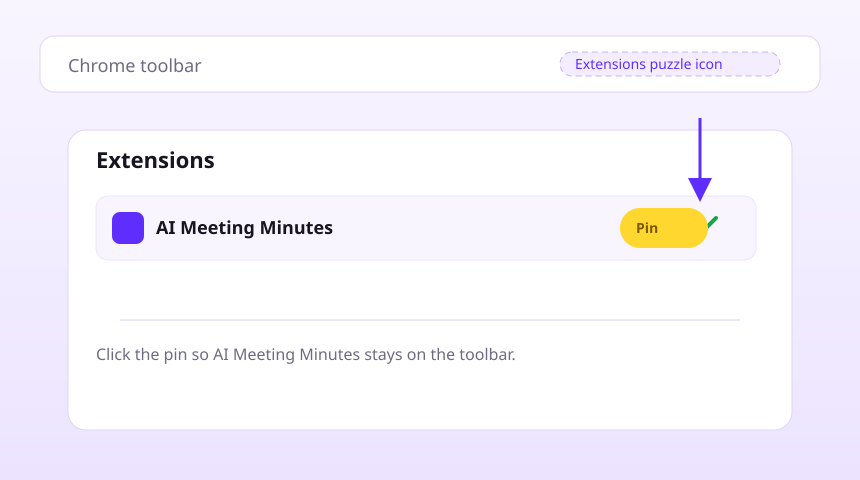

Pin the extension for quick access to AI Meeting Minutes.

How to pin
Open the puzzle icon in the Chrome toolbar → find
AI Meeting Minutes → click
Pin. Replace
images/how-to-pin.svg with a screenshot (PNG or
WebP) for a photo like on
mp4-to-mp3.pro/welcome.